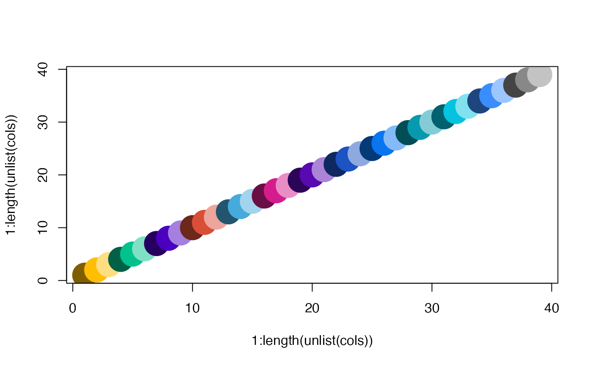
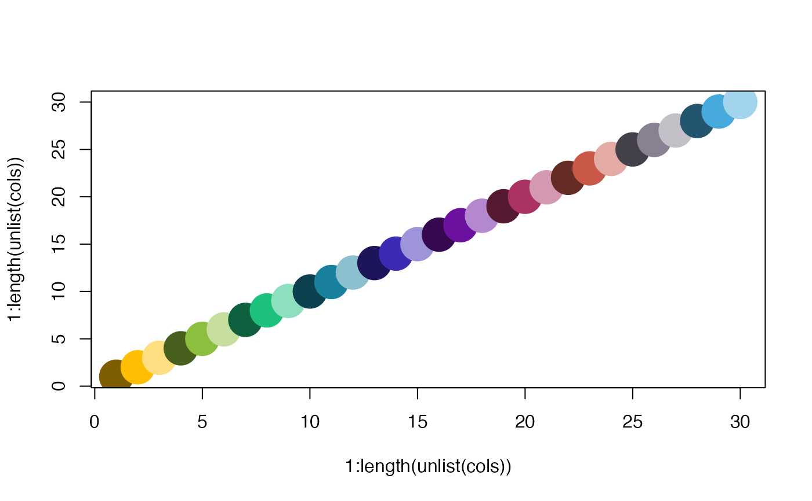

Make color palette based on Alamar colors
alamarColorPalette.RdMake color palette based on Alamar colors
Usage
alamarColorPalette(
n,
nReps = 1,
tint = "lightdark",
interpolate = FALSE,
interpolateIndex = NULL,
palette = 1
)Arguments
- n
number of main colors to output. For `palette=1`, maximum is 13 when `interpolate=FALSE`, and unlimited when `interpolate=TRUE`. For `palette=2`, maximum is 9 when `interpolate=FALSE`, and unlimited when `interpolate=TRUE` If n exceeds the maximum colors available, `interpolate=TRUE` will be turned on.
- nReps
optional, number of sub-colors to output for each of the main colors. Useful for when there are technical replicates, for example. Function will output n*nReps total colors.
- tint
optional, used when sub-colors are created. `"light"` blends main colors with white. `"dark"` blends main colors with black. `"lightdark"` (default) blends main colors with white & black.
- interpolate
logical `TRUE` or `FALSE` (default). If `TRUE`, main colors are based on interpolation of the colors denoted by the interpolate_index argument.
- interpolateIndex
indices of colors to interpolate. For `palette=1`, default is 1:5. For `palette=2`, default is `c(1,2,4,3,5,6)`.
- palette
Which set of colors to use. Integer. `palette=1` (default) is based on the original website color palette. `palette=2` is the new palette used in the NULISA manuscript. `palette=3` is the updated palette as of 2024 and 2025.
Examples
cols <- alamarColorPalette(n=13, nReps=3)
plot(1:length(unlist(cols)),
1:length(unlist(cols)), col=unlist(cols),
pch=19, cex=4)

cols <- alamarColorPalette(n=10, nReps=3,
interpolate=TRUE, interpolateIndex=1:5)
plot(1:length(unlist(cols)),
1:length(unlist(cols)), col=unlist(cols),
pch=19, cex=4)
